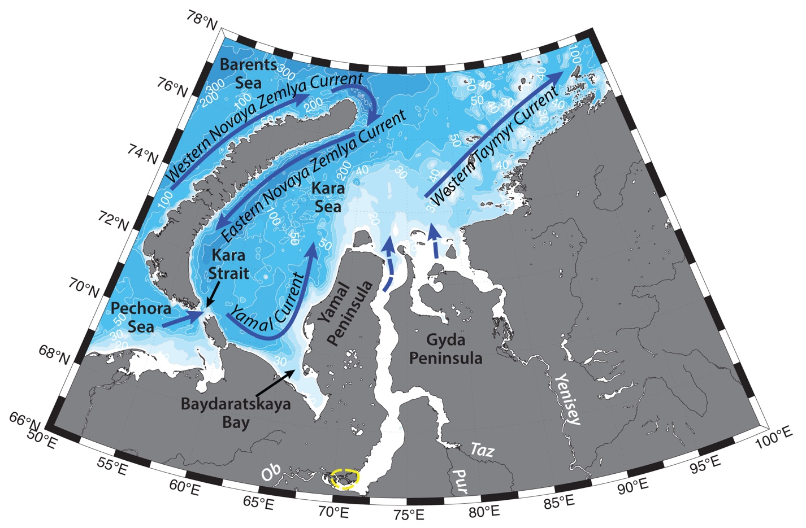

Schematic water circulation patterns and geographical place names in the Kara Sea region. Adopted from Pavlov and Pfirman (1995), Zatsepin et al. (2010). Dashed yellow line marks the studied region.
Hydrography of the Ob Estuarine Head region is determined by fresh Ob runoff, its temporal and spatial variability, as well as seasonal ice cover and wind forcing.
Gulf of Ob is about 870 km long and 50 to 80 km wide, the depth at its head doesn’t increase 6–8 m (Denisenko et al., 1999). Ob river supplies about 412 km3 of freshwater annually into the Kara Sea, with most of it being discharged during ice-free season – typically June – October (e.g. Gordeev et al., 1996; Carmack, 2000; Guay et al., 2001; Williams and Carmack, 2015; Janout et al., 2015). This discharge together with Yenisey water largely controls summer stratification and biogeochemical parameters on the Siberian shelf.
Southern part of the Ob Bay consists of the river water and is dominated by freshwater fauna and low diversity, caused by short summer period, low temperatures and high rate of mineral sedimentation (Denisenko et al., 1999). Hydrological regime of the waters and their biophysical properties are prone to seasonal variability (e.g. Pivovarov et al., 2003). Ob discharge is stable throughout the warm season and low during cold season (e.g. Osadchiev et al., 2017). Denisenko et al. (1999) reported the lowest temperature observed in June close to freezing (-1.8 °C), and the warmest waters of 8.5 to 11.5 °C in September. In wintertime water column is thoroughly mixed, with temperatures close to freezing and increased salinity. While saltwater can inflow into Ob-Taz estuary from the Kara Sea, it is unlikely, that it reaches the estuarine head. Shallow parts of the Ob Bay can freeze to the bottom during wintertime. Nutrient concentrations peak later in spring. Summertime warm freshwater discharge accelerates breaking of the land fast ice and transports it offshore (Pivovarov et al., 2003).
During wintertime “stagnant” or “mortal” waters with oxygen deficiency can be formed in the Ob Bay (Pivovarov et al., 2003).
Main tides in the southern part of the Kara Sea are semidiurnal lunar tides, with amplitude about 0.2–0.5 m. Tidal currents do not exceed 0.2 m/s; therefore, tidal mixing has limited influence on the Ob-Yenisey waters (e.g. Kagan et al., 2010).